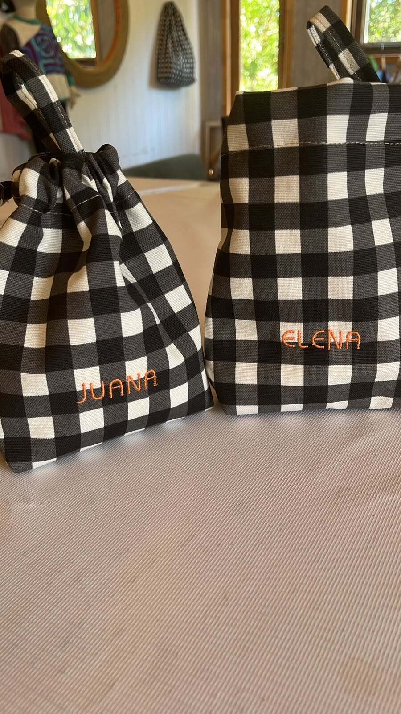
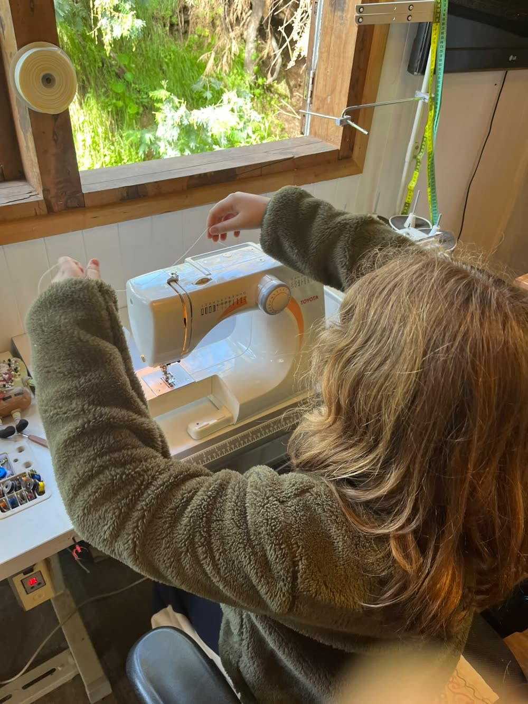
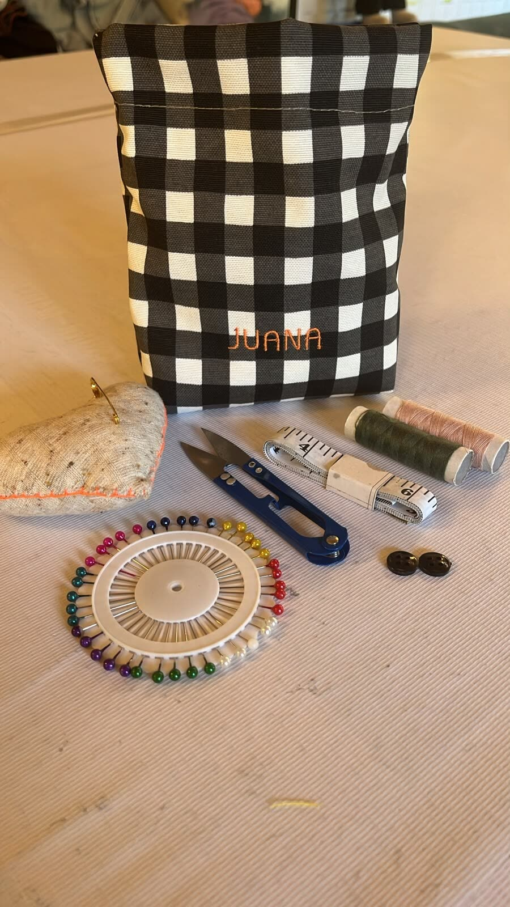
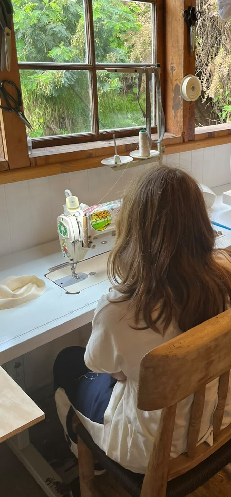
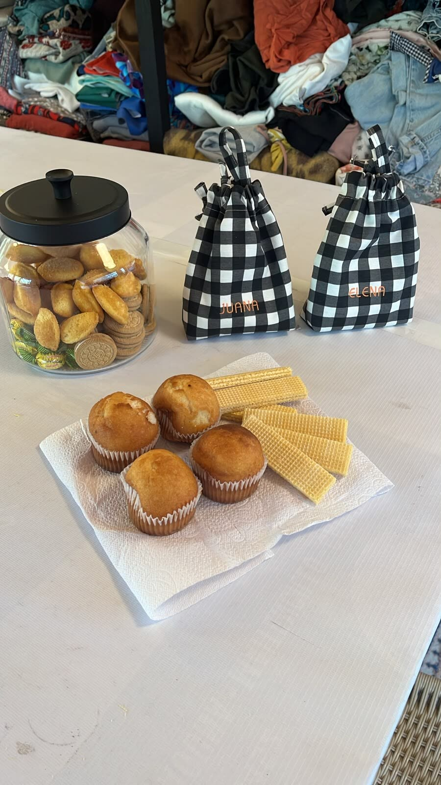

Taller textil · Producción · Gestión · Diseño
Donde la costura se vuelve ciencia.
Medir, probar y repetir hasta que la prenda quede bien. Enseñamos a coser desde cero, con talleres para niñas y niños, y hacemos prendas y piezas a medida.
Curso de costura básico
«Lo hice yo»
Cuatro clases para aprender a coser desde cero, sin ningún conocimiento previo. Al final te llevas tu primer producto, hecho por ti.
-
01
La máquina
Cómo enhebrarla, qué hace cada función, cómo arreglarla si no funciona, limpiarla y aceitarla. Las puntadas, los prensatelas y para qué sirve cada aguja.
-
02
Práctica
Puntadas sobre tela para soltar la mano, dobladillos, bastas, costuras francesas y overlock. Mucha práctica, para que las terminaciones queden bien.
-
03
Técnicas
Cierres, broches, ojales y bolsillos; terminaciones con elástico, fruncidos, tableados, estampas y bordados: lo que necesitas para confeccionar una prenda.
-
04
Tu estuche
Tu primer producto: un estuche personalizado, diseñado, cortado y cosido por ti, con tu nombre.
Talleres de costura
Para niñas y niños
Aprenden a medir, enhebrar y cortar, a su ritmo y con paciencia, en máquinas de verdad. Y cosen su primera pieza: se la llevan a casa con su nombre bordado.
Preguntar por el taller




El taller
Producción, gestión y diseño
Prendas y piezas a medida
Diseño y producción de prendas y piezas por encargo, en el taller.
Cursos y talleres
«Lo hice yo» para aprender a coser desde cero, y talleres de costura para niñas y niños.
PUA
Nuestra línea de diseño textil infantil sostenible: prendas hechas reutilizando materiales. puatextil.com
Inscripciones
Inscríbete o pregúntanos
Déjanos tus datos y te escribimos para contarte fechas, horario y valor. Usamos tus datos solo para responderte.